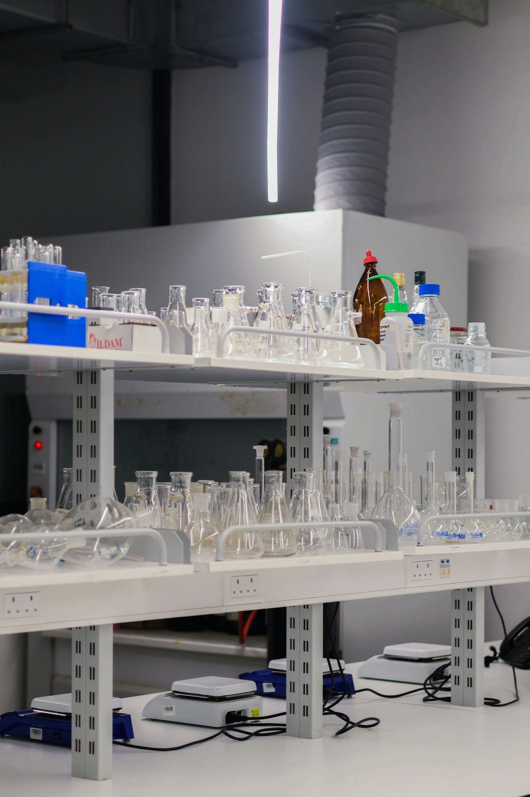

Toxicology & safety pharmacology.
GLP-aligned safety assessment spanning acute, subacute, subchronic, chronic, DART, carcinogenicity, genotoxicity, neurotoxicity, immunotoxicity, local tolerance, and safety pharmacology, conducted in accordance with applicable current OECD Test Guidelines, ICH S-series Safety Guidelines and GLP requirements.
Study Snapshot
Safety package scope, species, and guidance.
Safety data is the gate every drug, device, and consumer-health product must pass. We design toxicology programs that anticipate what regulators will ask, and answer it with the right study, the right endpoint, and the right level of evidence.

Our scientific leads stay engaged from study design through pathology review and report finalisation. When unexpected findings emerge, we work through their implications with you rather than simply tabling them in a report.
Designed for Agency Scrutiny From Day One
Protocols are reviewed against the target submission jurisdiction (FDA, EMA, DCGI/CDSCO, MHRA) before they're locked. Endpoint selection and statistical power are justified in the protocol, not the report.
Study types we run
Our toxicology programs can be structured around applicable ICH safety guidelines and OECD Test Guidelines, with specialised studies delivered through qualified partner facilities. We commonly run the following, individually or as bundled IND-enabling packages.
- Acute toxicity: single-dose studies for hazard classification (rodent, oral / dermal / inhalation routes).
- Repeat-dose toxicity: 14, 28, 90-day, and chronic (6 / 9 / 12-month) studies for systemic safety evaluation.
- Reproductive & developmental toxicity (DART): fertility, embryo-fetal development, pre/postnatal development.
- Carcinogenicity: 2-year rodent bioassays with full histopathology.
- Genotoxicity battery: Ames, in vitro chromosomal aberration / micronucleus, in vivo MN, comet assay.
- Specialised toxicology: juvenile, immunotoxicity, neurotoxicity (FOB), local tolerance.
- Safety pharmacology: cardiovascular, respiratory, and CNS core battery per ICH S7A.
Methods & guidelines
Each study is mapped to its driving guideline before it begins. The table below summarises the most commonly run studies in our portfolio.
| Study | Guideline | Typical duration |
|---|---|---|
| Acute oral toxicity (fixed dose / ATC / UDP) | OECD 420 / 423 / 425 | 14 days |
| Acute dermal toxicity | OECD 402 | 14 days |
| Acute inhalation toxicity | OECD 403 / 433 / 436 | 14 days |
| 28-day repeat-dose oral toxicity | OECD 407 | 4 weeks + recovery |
| 90-day repeat-dose toxicity (rodent) | OECD 408 | 13 weeks + recovery |
| Chronic toxicity (non-rodent) | OECD 452 | 6 – 12 months |
| Combined chronic / carcinogenicity | OECD 453 | 104 weeks |
| Prenatal developmental toxicity | OECD 414 | GD 5 – 20 |
| Two-Generation Reproduction Toxicity Study | OECD TG 416 | F0 – F2 |
| Extended One-Generation Reproductive Toxicity Study | OECD TG 443 | F0 – F1 (cohorts as designed) |
| Bacterial reverse mutation (Ames) | OECD 471 | 4 – 6 weeks |
| In vivo mammalian micronucleus | OECD 474 | 1 – 2 weeks |
| Functional observation battery (FOB) | OECD 424 | Per parent study |
How a study runs
A five-stage workflow keeps studies aligned with regulatory intent from feasibility through reporting.
Feasibility & Gap Analysis
Map existing data to target submission. Identify regulatory gaps and dose-range justification.
Protocol & SAP
OECD/ICH-aligned protocol with statistical analysis plan, endpoint matrix, and review boards.
In-Life Conduct
Dosing, observations and clinical pathology at qualified GLP-compliant partner test facilities.
Pathology & Review
Anatomic / clinical pathology with peer review; study-specific endpoints (e.g. NOAEL, where applicable) and biostatistics.
Final CSR
Final report from the GLP test facility with raw data archive and QA statement, reviewed by BioVeritas for Module 4 / IND use.
Endpoints & deliverables
Every study yields a defined set of endpoints, agreed upfront. Below is a representative endpoint set for a 90-day rodent toxicity study.
Quality & data integrity
All work is conducted under GLP-aligned SOPs with ALCOA+ data-integrity principles. Raw data is captured contemporaneously, archived for the regulatory minimum, and made available for sponsor and agency audit.
- 21 CFR Part 11 compliant electronic records and signatures.
- Computerised systems validation (CSV) for instrument and LIMS workflows.
- Independent QA unit reviewing protocols, in-life conduct, and final reports.
- Archival per OECD GLP and 21 CFR 58, typically 10+ years.
Frequently asked
Can BioVeritas conduct studies for submissions outside India?
Yes. Studies are designed against the target submission jurisdiction, DCGI/CDSCO, FDA, EMA, MHRA, or PMDA, with the protocol indicating the regulatory framework prior to study start.
Do you support specialised endpoints like immunotoxicity or juvenile toxicity?
Yes, including T-dependent antibody response (TDAR), juvenile rodent toxicity for pediatric programs, and cardiovascular / respiratory / CNS safety pharmacology per ICH S7A and S7B.
How quickly can you start a study?
Typical lead time is 4 – 6 weeks from contract signature to first dose, depending on protocol complexity, ethics-committee approval, and test article availability.